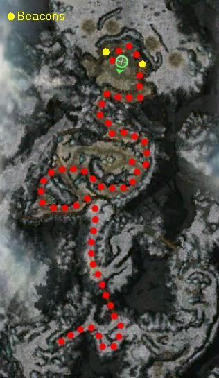

Elite: Cleave
M22
Thunderhead Keep
◉ Mission Map

Click to enlarge · Local cache · Wiki
Summary (click to expand)
The Deldrimor Dwarves have lost the Keep, and they need your help to retake it from the Stone Summit and defend it against the Mursaat .
Region: Southern Shiverpeaks · Mission: 22 of 25 · Type: Cooperative
✓ Objectives
Retake Thunderhead Keep.
- Clear the city.
- Clear the fort.
- Kill Dagnar Stonepate.
- Help King Jalis Ironhammer hold Thunderhead Keep.
- Speak with King Jalis Ironhammer.
- *BONUS* Light the beacons to draw additional Mursaat forces into Thunderhead Keep.
→ Walkthrough
The goal is to recover the Deldrimor Dwarves' capital city and fort while protecting King Jalis Ironhammer. The mission is divided into four stages: getting to the capital, clearing it of foes, breaching the fort, and then defending it against a siege.
Reaching the city is straightforward: talk to King Jalis Ironhammer to open the first gate; he will then follow whichever party member talked to him first - he will follow that player until the cutscene. Cross the bridge and then head north-west. There is an incoming patrol at the end of this bridge, so pull the first mob towards the bridge and kill them before the other one arrives.
Once inside the city, bring Jalis to the gate at the eastern side of the city and he will open it with Claim Resource. The mission objective says to clear the groups inside the city, but this is not required. Now follow the path leading to the fort.
Defeat the Stone Summit led by Dagnar Stonepate inside the fort. When the western groups are killed, Jalis will say "Deldrimor declares war!". Killing all the fort groups triggers a cutscene, teleporting Jalis to the top of the fort; he will no longer follow the party.
When Deldrimor declares war, waves of Stone Summit and Jade constructs start spawning and approaching the fort. After 2 minutes and 15 seconds, a Stone Summit boss group spawns. When this entire group dies, Jalis says "The Mantle followed you! Stand fast friends! This will be our finest hour!". Waves of White Mantle start spawning to the north of the fort, and Jade constructs near the teleporter further to the north. After exactly 3 minutes, a Mursaat boss group spawns. When this entire group dies, Jalis says "Be on your guard. The left hand of Grenth himself comes for us.". Waves of Mursaat start spawning near the teleporter. After 9 minutes and 40 seconds, Confessor Dorian and a group of White Mantle spawn near the teleporter. They take a strange route to the fort, stopping for a while to the north-east before turning back and entering through the west. Kill this entire group and then talk to Jalis to complete the mission.
It is possible to interact with the Firing Levers to harm the waves of enemies as they approach the fort.
★ Bonus
The bonus requires the party to prevent the death of Dwarven allies located outside the fort by lighting two Storm Beacons with Enchanted Torches that spawn after the cutscene, which draw enemies to the fort and away from the unprotected Dwarves. Both beacons are on opposite sides of the fort, on the east and west walls.
The bonus fails if the beacons are not lit within about a minute of Deldrimor declaring war. There is enough time for a single player without speed boosts to light both beacons. Do not try to carry a torch between the beacons; otherwise the bundle will slow the runner down too much. There is a torch at either beacon, allowing the player to drop and leave the torch at the lit beacons. With more players in the party, both beacons can be lit simultaneously.
Unfortunately, the quest log does not update on the Dwarves' survival. The only indication the bonus was failed is if the Dwarves cry out, "The end is here! Great Dwarf save us!" If that text does not appear in party chat, it is an indirect confirmation of success.
Once the last attacker dies, the quest log will update, and a quest marker will appear over Ironhammer's head. Speaking with him concludes the mission. The bonus will be awarded at that point, if it was completed successfully.
◆ Hard Mode
Although the foes are considerably more difficult in hard mode, the techniques are the same. Keep a more careful eye on the king's health throughout the mission.
☠ Bosses & Elites
Elite: Melandru's Arrows
Elite: Mark of Protection
Elite: Offering of Blood
Elite: Crippling Anguish
Elite: None / not listed
Elite: Water Trident
Elite: Devastating Hammer
Elite: Oath Shot
Elite: Aura of Faith
Elite: Life Transfer
Elite: Energy Surge
Elite: Thunderclap
✦ Tips & Notes
Skill recommendations
- Ward of Stability to counter Summit Giant Herders's Giant Stomp.
- Minions/spirits to outnumber foes.
- AoE skills, especially if using the defend the king method.
- Hex removal skills, or the king will often die from hex overload.
Notes
| The Guild Wars 2 Wiki has an article on Thunderhead Keep. |
- When facing Dagnar there are two walls which each hold two ballistae. The ballista on the left can be fired to kill a mob of eight enemies before killing Dagnar, giving you fewer enemies to fight in the siege.
- The siege portion of the mission can be managed (even in hard mode) without effort by a player with 7 heroes/henchmen (i.e. while AFK):
- Flag heroes at the top of the stairs, somewhat apart.
- Change their mode to Fight.
- Ensure you have a balanced party.
- This is the first of only four missions required to reach the end of the Prophecies storyline.
- Complete exploration of this area contributes approximately 1.1% to the Tyrian Cartographer title.
- You can easily explore the north part of the map after Confessor Dorian has been killed. No more mobs will spawn after him, and the mission will not end until you speak to King Jalis.
- Completion of this mission will fill in page #15 of The Flameseeker Prophecies storybook.
- After completing this mission, your party travels to Ember Light Camp using the Mursaat teleporter.
Spoiler alert: The following text contains spoilers relating to the story of Guild Wars.
- During the ending cinematic, the Undead Lich and Spoiler-related boss can be seen near a cave to the north guarded by some jade.